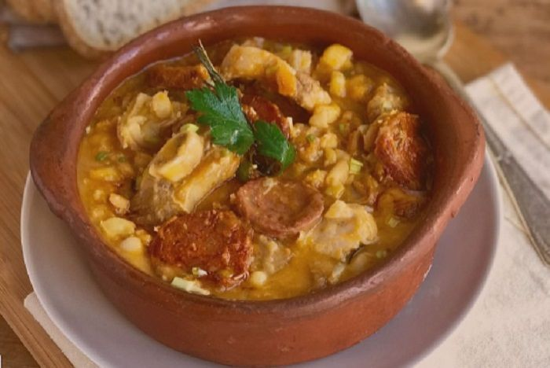

Locro

Descripción
El locro nació entre los indios Quechuas, llamado como “luqru” o “rucru”.
Era un guiso realizado a base de zapallo, maíz y porotos.
Su origen es precolombino y se lo prepara de varias maneras,
según la tradición de cada una de las provincias argentinas.
Lo único que no varía es su base vegetal y el procedimiento de cocción.
Ingredientes
- 1Kg. de maiz blanco pisado
- 750gr. de porotos de manteca
- 1,5Kg. de carne vacuna
- 5 patitas de cerdo
- 250gr. de mondongo
- 250gr. de panceta salada o ahumada
- 4 chorizos colorados
- 350gr. de zapallo
- 350gr. de batata
- 350gr. de papa
- C/N aji moido, comino, sal, pimienta y aceite de oliva
Procedimiento
- La noche previa dejamos en remojo el maiz pisado junto con los porotos.
- Trozamos la carne. Cortamos por la mitad las patitas de cerdo. Cortamos el mondongo y la panceta en cubos de igual tamaño, y los chorizo en rodajas. Reservamos todo
- Cortamos el zapallo, la papa y la batata en cubos.
- En una olla grande hervimos los porotos, el maiz y las patitas de cerdo aproximadamente una hora.
- Transcurrido ese tiempo incorporamos la carne, el mondongo, la panceta y los chorizos. Dejamos que hierva entre 10 y 15 minutos; mientras espumamos (retiramos la espuma de la superficie de la olla). A medida que se evapore el agua, vamos agregandole mas.
- Añadimos una cucharada sopera de aji molido y una de comino; 2 de sal y media cucharada de pimienta.
- Incorporamos los vegetales y dejamos hervir po 30 minutos mas.